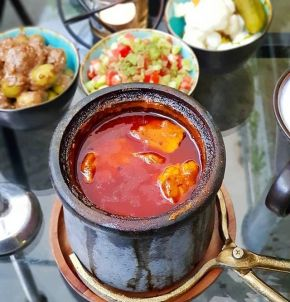

Dizi

Abgoosht (Dizi) is a classic Persian stew made with tender meat, beans, chickpeas, and vegetables, simmered in rich spices.
It's a hearty, flavorful dish traditionally served with flatbread and fresh herbs.
Ingredients
-
500g lamb or beef (bone-in chunks)
-
1/2 cup chickpeas (soaked)
-
1/2 cup white beans (soaked)
-
2 medium potatoes (peeled and chopped)
-
2 tomatoes (chopped)
-
1 onion (chopped)
-
1 tsp turmeric
-
Salt and pepper (to taste)
-
5-6 cups water
Steps
-
Cook Meat: Brown the lamb or beef with onions and turmeric in a pot.
-
Add Beans & Chickpeas: Add soaked chickpeas and beans to the pot.
-
Add Water: Pour in enough water to cover the ingredients and cook until the meat is tender.
-
Add Vegetables: Add chopped potatoes and tomatoes, season with salt and pepper.
-
Simmer: Let everything cook for another hour or until fully soft.
-
Mash & Serve: Mash the cooked ingredients in the pot, then serve with bread.
Homepage